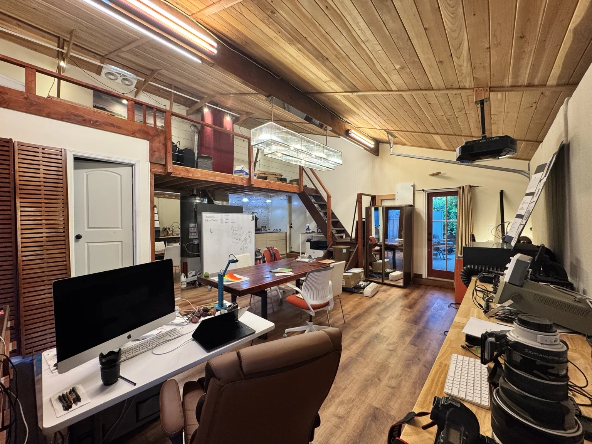
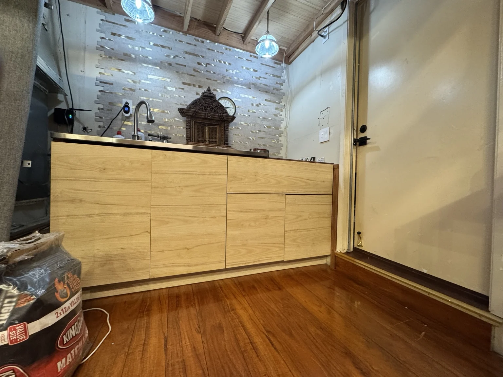

Gather
A shared table for sketching, questions, short lessons, and project critiques.
The space / A personal working studio
A timber-ceiling atelier with tools at its edges and ideas at its center.

Architecture with character
The existing wood-paneled vaulted ceiling, exposed loft structure, large chandelier, and substantial conference table establish the room’s character.
The design direction builds on those qualities: clearer sightlines, coordinated storage, organized workstations, and a small changing display of things made and discovered here.

A room that changes with the work
A shared table for sketching, questions, short lessons, and project critiques.
Perimeter stations support fabrication, electronics, measurement, and imaging.
Movable furniture allows the center to be reconfigured for experiments and robotics.
Projection, a large display, and whiteboard support demonstrations and presentations.

The practical comforts
The room includes a kitchenette with sink and snack refrigerator, a full bathroom, and its own heating and cooling. A separate side entrance is reached by a private walkway from the street.
The loft’s future role is still being assessed. It is not included here as a promised student activity area.
A studio taking shape
We’re shaping the first learning experiences for curious students in grade 5 and above.
Start a conversation